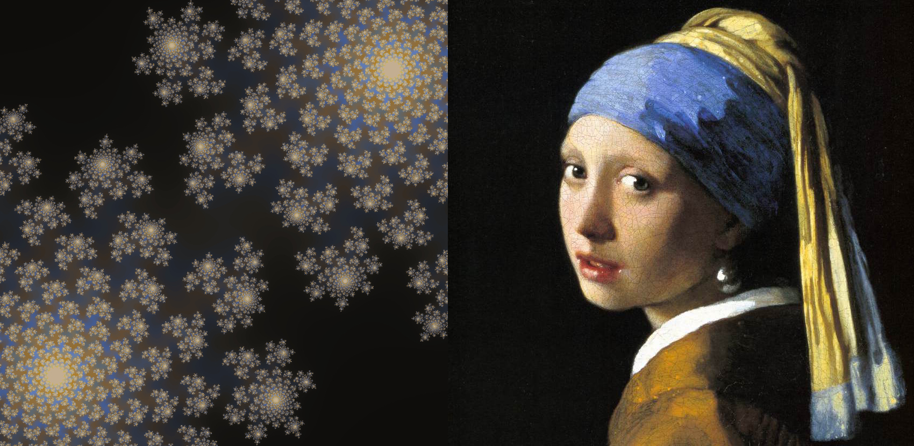

Images
A Julia Julia set: ColorSchemes and Images
Here's an example of how you can use ColorSchemes when creating images with Images.jl. The code creates a Julia set and uses a pre-defined ColorScheme extracted from Vermeer's painting "Girl with a Pearl Earring" (shown at the right for reference).

using ColorSchemes, Images, FileIO# and possibly QuartzImageIO (macOS) and/or ImageMagick (Linux)function julia(z, c, maxiter::Int64) for n = 1:maxiter if abs(z) > 2 return n end z = z^2 + c end return maxiterend# convert a value between oldmin/oldmax to equivalent value between newmin/newmaxremap(value, oldmin, oldmax, newmin, newmax) = ((value - oldmin) / (oldmax - oldmin)) * (newmax - newmin) + newminfunction draw(c, imsize; xmin = -1, ymin = -1, xmax = 1, ymax = 1, filename = "/tmp/julia-set.png") imOutput = zeros(RGB{Float32}, imsize, imsize) maxiterations = 200 for col = range(xmin, stop=xmax, length=imsize) for row = range(ymin, stop=ymax, length=imsize) pixelcolor = julia(complex(row, col), c, maxiterations) / 256 xpos = convert(Int, round(remap(col, xmin, xmax, 1, imsize))) ypos = convert(Int, round(remap(row, ymin, ymax, 1, imsize))) imOutput[xpos, ypos] = get(ColorSchemes.vermeer, pixelcolor) end end save(filename, imOutput)enddraw(-0.4 + 0.6im, 1200)